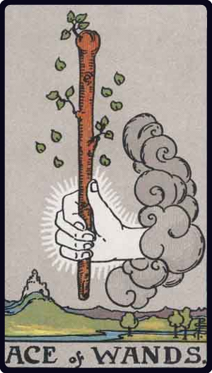
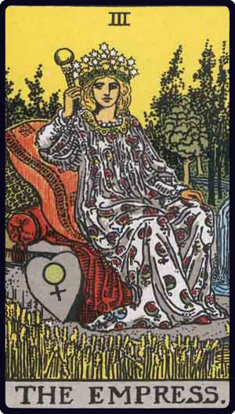

Draw
three cards
...
...from a list
Ace of Wands
upright
III The High Priestess
reversed
7 of pentacles
reversed
...at random
Only draw from the Major Arcana
Allow cards to be reversed
Draw!
It appears you have JavaScript disabled! Apologies; this is a static website, so JS is needed for functionality :(


Interpret using
Rider-Waite
Labrynthos
: